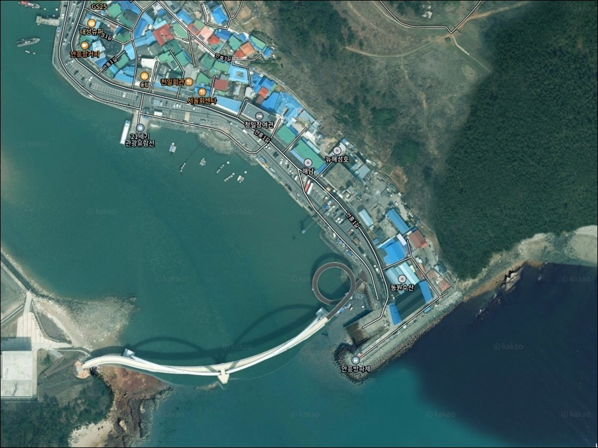
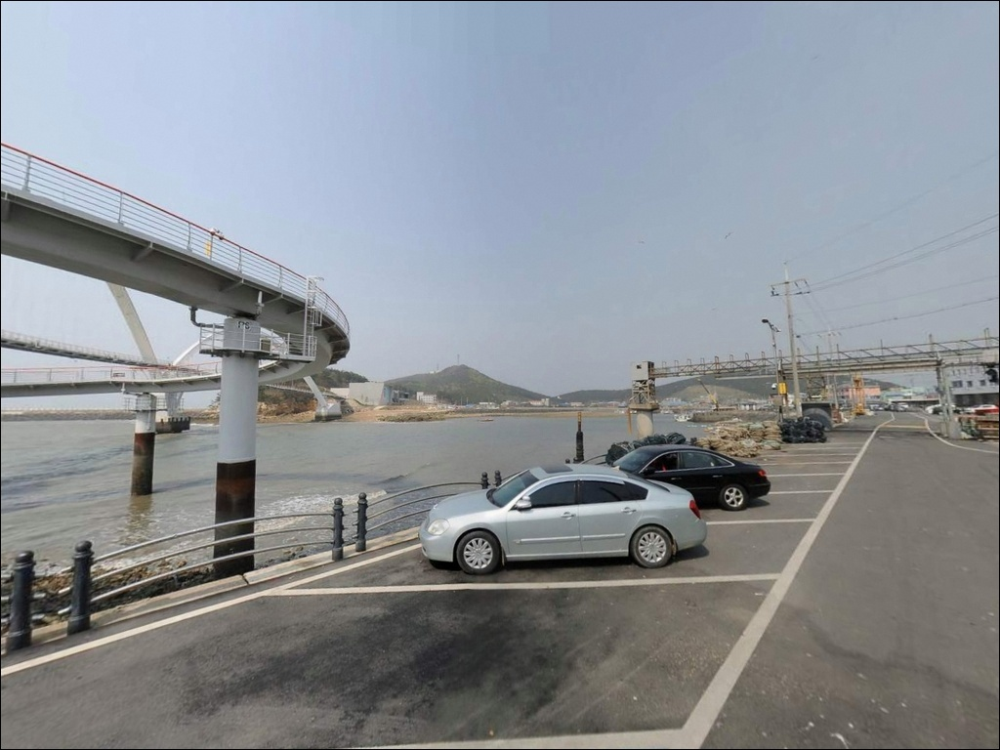
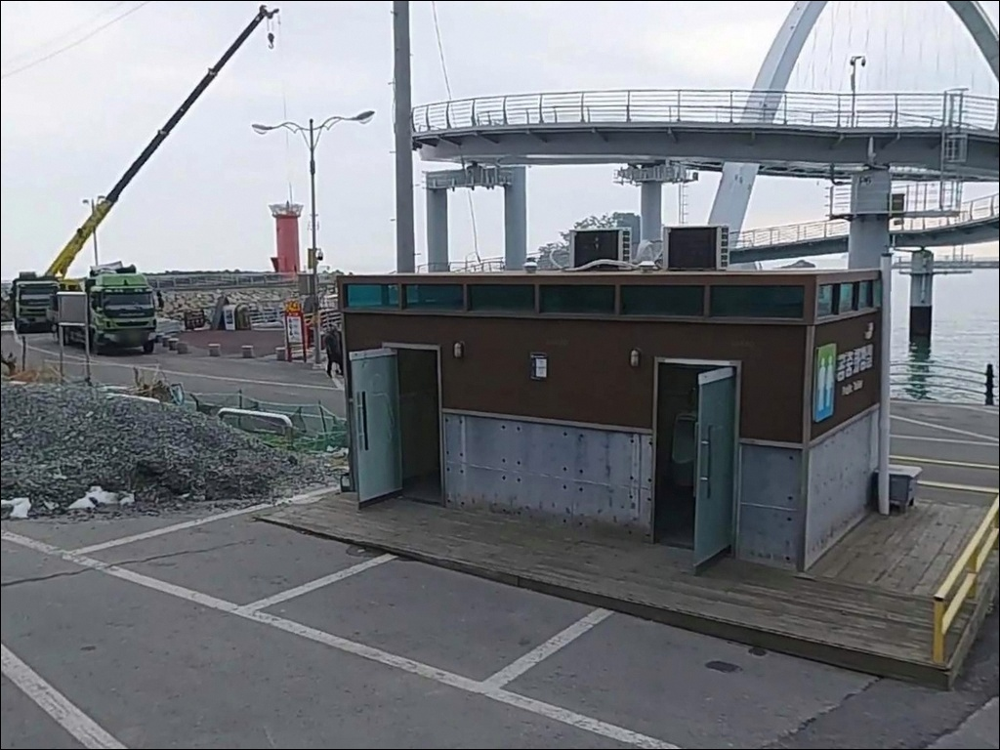
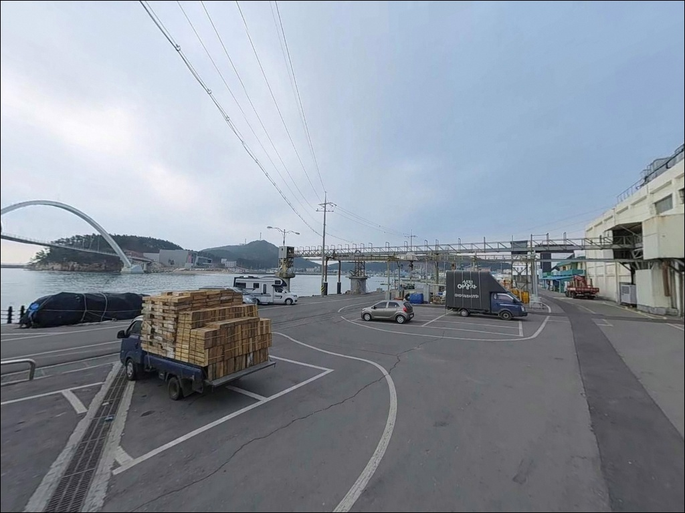
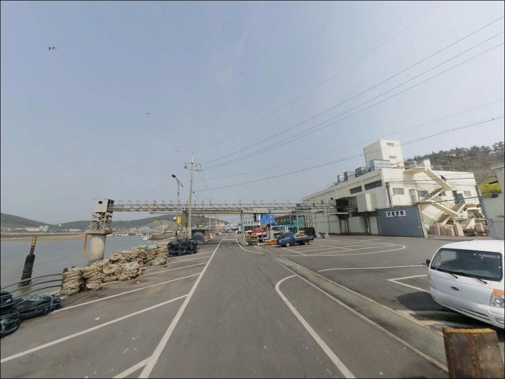
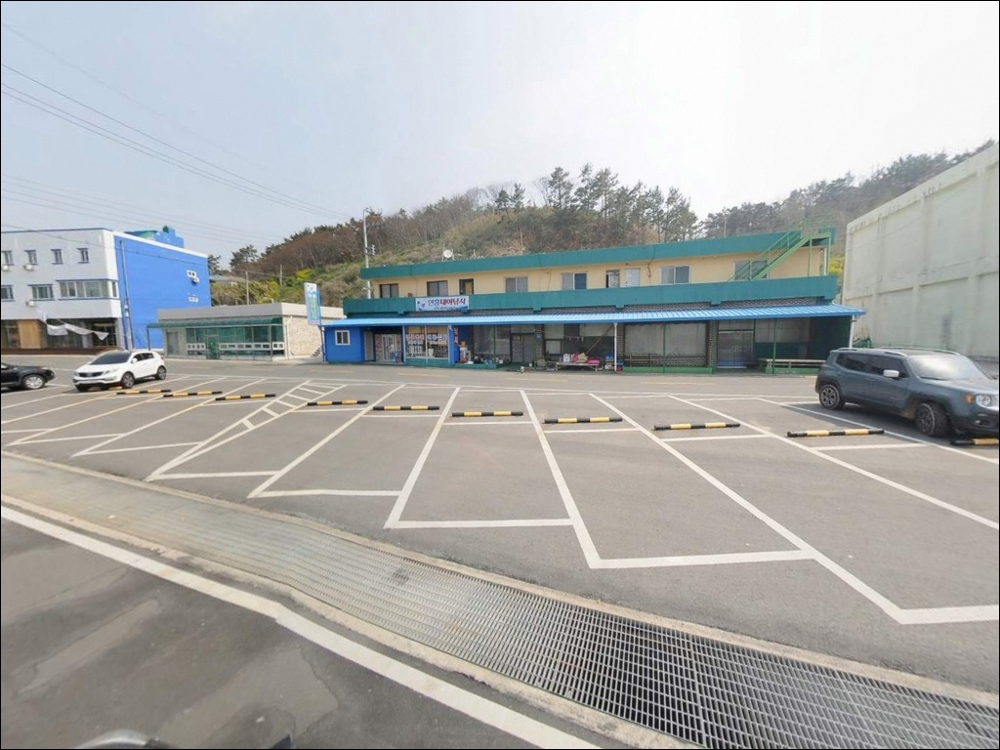
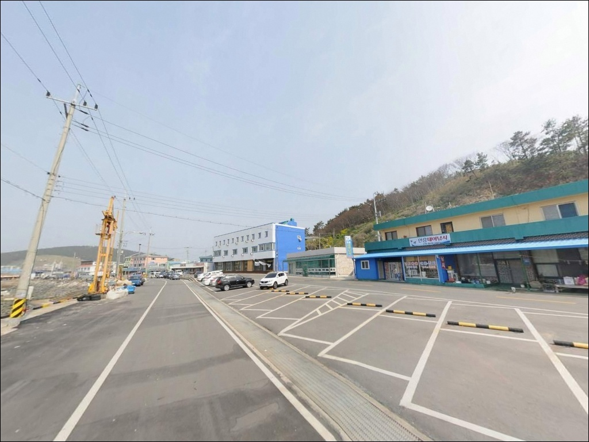
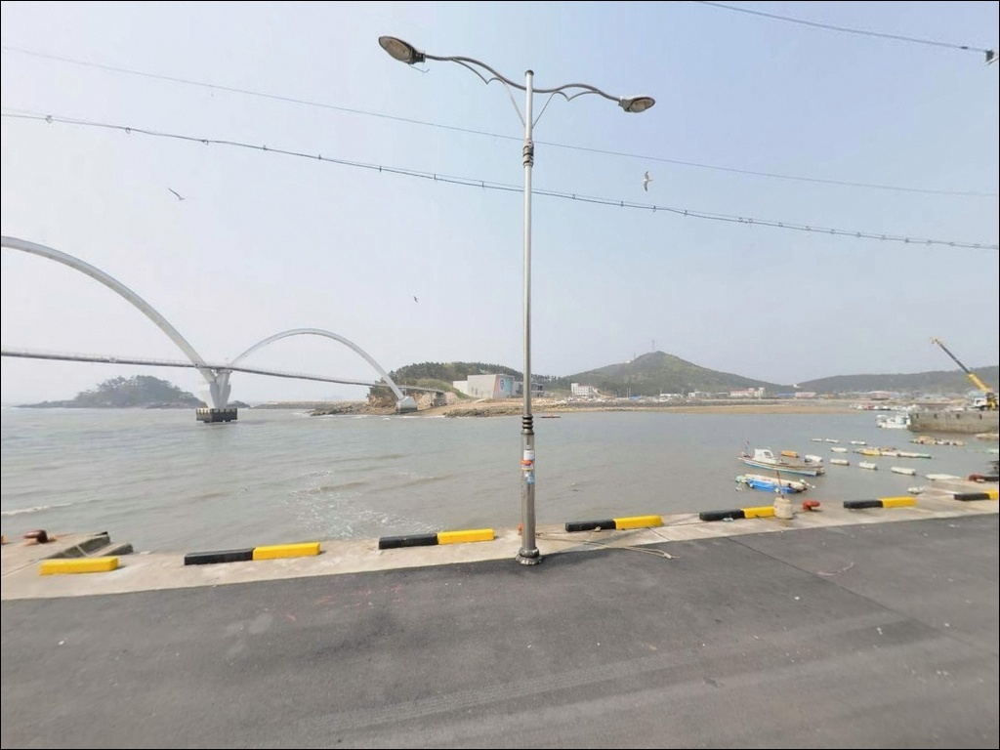
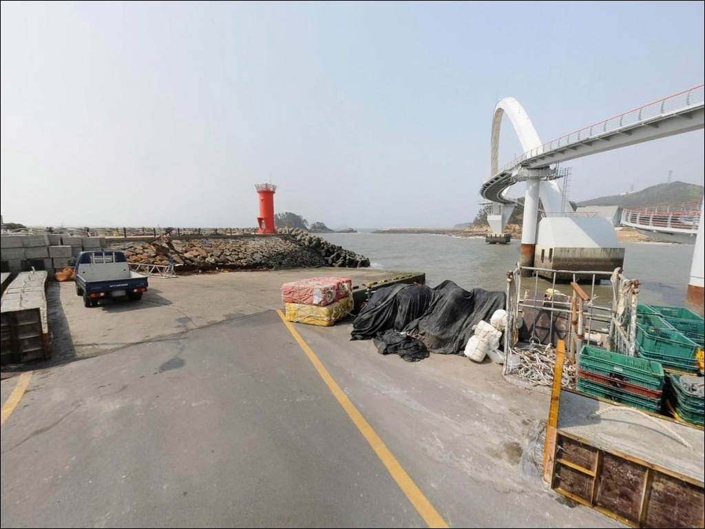

안흥항 (안흥방파제), 충남 태안군 감성 바다 차박, 낚시 명소
이 페이지에는 광고(제휴 링크 포함)가 있으며, 광고 링크를 통해 구매하면 운영자가 판매 수익 또는 수수료를 받을 수 있습니다. 포인트 사진: 카카오맵 스카이뷰·로드뷰. 이 페이지의 지도·사진 이미지는 카카오맵의 실제 서비스 이미지와 다를 수 있습니다.


포인트 안내
안흥항
충남 태안군 근흥면 정죽리 1268-44
안흥항 외항 방파제에서 자리를 잘못 잡으면
물때와 조류 방향이 맞지 않아
채비를 흘려보내다 시간만 보내는 경우가 생깁니다.
서해 특성상 조수간만의 차가 크고,
외항 끝단으로 갈수록 조류 영향이 강해지는 구조라
물때 없이 진입하면 기다림만 길어집니다.
이 글은 안흥항의 방파제 구조와 진입 동선,
차박 여건, 낚시 방식 선택 기준을 중심으로 정리합니다.
조황 단정이나 특정 어종 보장은
이 글의 범위에 포함되지 않습니다.

1. 위치 및 진입 동선 분석
안흥항은 태안반도 남서쪽 끝자락에 위치한
국가어항으로, 1978년 지정 이후
내항과 외항이 함께 운영되는
복합 구조의 어항입니다.
안흥나래교를 통해 맞은편 신진도와 연결되어 있어
항 전체가 하나의 낚시 권역으로
이해하는 편이 현실적입니다.
진입 도로는 왕복 2차선 포장 기반으로
상태가 양호한 편입니다.
일반 승용차는 물론
캠핑 장비를 실은 SUV나 소형 캠핑카도
진입 자체에 큰 어려움이 없을 가능성이 높습니다.
선착장 주변과 항 배후지 공간에
주차 여건이 갖춰져 있는 편으로 보입니다.
다만 국가어항 특성상
어선 출항·입항 동선과 겹치는 구역이 있습니다.
외항 방파제 초입은
어업 차량 통행 구역일 가능성이 있어
낚시객 주차 허용 범위는
현장에서 직접 확인하는 것이 기본입니다.

2. 차박 환경 및 야간 체류 여건
안흥항 주변은 낚시 선사 사무실, 수산물 판매점,
관광 인프라가 밀집된 환경입니다.
안흥성과 안흥나래교 등 관광 자원이
항 인근에 자리하고 있어
야간에도 차량 통행과 사람 왕래가 있는 편이며,
완전한 고립형 차박 환경과는 거리가 있습니다.
국가어항 특성상 항 내부에는
가로등과 작업 조명이 갖춰져 있을 가능성이 높습니다.
야간 낚시에는 도움이 되지만,
프라이버시가 중요한 차박 목적이라면
다소 불편한 구조입니다.
외항 방파제 끝단 방향은
조명이 없어지는 구간이 있을 가능성이 있어
개인 조명 장비는 필수입니다.
차박을 메인 목적으로 삼는 경우,
조용한 환경을 우선하는 분에게는
인근 연포 해변이나 학암포 방향 해안 라인이
더 맞는 선택일 수 있습니다.
안흥항 자체는 낚시 출조 베이스캠프 성격으로
활용하는 편이 현실적입니다.


3. 주변 편의시설 및 인프라 현황
안흥항은 서해 태안 지역에서
편의 인프라가 잘 갖춰진 어항 중 하나입니다.
항 내부에 편의점이 위치한 것으로 확인되며,
횟집과 해산물 매운탕 전문점이
항 주변에 다수 운영 중입니다.
식수와 간식, 낚시 소품 보충은
비교적 수월한 편입니다.
낚시 용품 면에서도
복수의 낚시 선사 사무실과 낚시점이
항 내부에 자리하고 있어
미끼나 채비 추가 구매가 가능한 환경입니다.
출발 전 미리 갖추는 것이 기본이지만,
현장에서 조달 가능한 여건이 있다는 점은
이 포인트의 실용적인 강점입니다.
안흥나래교를 통해 신진도 방향 인프라까지
이용 범위가 이어지는 구조입니다.
화장실 운영 여부 등 세부 시설은
현장에서 직접 확인하는 것이 필요합니다.

4. 방문 전 반드시 챙겨야 할 준비사항
안흥항 방문 전 가장 먼저 확인할 것은
물때입니다.
안흥량은 역사적으로 조류가 강하고
기상 변화가 빠른 해역으로 알려진 곳입니다.
바다타임에서 물때를 확인하고
조금 전후나 만조 전후를 기준으로
출발 시각을 조율하는 것이
외항 방파제 공략의 기본입니다.
외항 방파제 끝단과 테트라포드 구간은
젖은 콘크리트 표면이 미끄러운 편이고,
조류가 강할 때 파도 영향을 받는 경우가 있습니다.
구명조끼 착용은 기본이며,
야간 입장 시 헤드랜턴은 필수입니다.
미끄럼 방지 기능이 있는 신발을 준비하면
방파제 이동이 안전해집니다.
선상낚시 출조 계획이 있다면
당일 기상 예보를 반드시 재확인합니다.
안흥항은 유람선과 낚싯배가 동시에 운항하는 구조라
어선 출항·입항 동선을
방해하지 않는 낚시 위치 선정이
기본 매너입니다.

5. 외항 방파제 자리, 진입 전에 확인해야 할 조건
안흥항은 내항 방파제 256m와
외항 동방파제 560m, 서방파제 260m로 구성된
방파제 총 연장이 긴 편의 구조입니다.
내항은 선박이 정박하는 정온수역 성격이 강해
수심이 완만하게 깊어지는 편이며,
외항 동방파제 끝단으로 갈수록
수심이 깊어지면서 조류 영향이 커지는 구조입니다.
서해 특성상 조수간만의 차가 크기 때문에
간조 시에는 내항 얕은 구역에서
낚시 여건이 급격히 좁아질 수 있습니다.
안흥나래교 교각 주변은
수중 구조물로 작용해 어류가 모일 가능성이 있으며,
교각 주변 루어 탐색이 맞는 구간입니다.
외항 방파제 끝단은 조류 영향을 직접 받는 구간으로,
물때를 맞춰야 채비 컨트롤이 가능해집니다.
안흥항 앞바다는 수심이 깊은 편으로 확인되어
도보 방파제에서도 수심 조건을 기대해 볼 수 있지만,
가기 전에 최신 조황은 꼭 검색해 보시기 바랍니다.


6. 포인트에 어울리는 낚시 스타일
외항 방파제를 중심으로 생각할 때
가장 어울리는 낚시는 원투낚시입니다.
수심이 있는 외항 구간과 조류 흐름이 형성되는
방파제 끝단 방향은
채비를 멀리 보내는 방식에 유리한 조건입니다.
물때 조류가 살아 있는 시간대에
바닥층을 탐색하는 방식이 기본 공략입니다.
가을 시즌에는 갑오징어와 쭈꾸미를
방파제 워킹으로 노려볼 수 있습니다.
외항 방파제와 나래교 주변은
에깅 채비 운용에 어울리는 구간이며,
조류가 느려지는 정조 타이밍 전후가
에깅 채비 컨트롤에 유리합니다.
내항 방파제 구간에서는
찌낚시나 가벼운 루어 지그헤드 채비가
잔잔한 수면 조건과 맞는 편입니다.
고등어나 학꽁치 같은 회유성 어종이
내항으로 들어오는 시기에는
표층을 노리는 카드 채비 방식도
활용해 볼 수 있습니다.

7. 대안 포인트와 플랜 B 동선
안흥항 방파제 여건이 기대에 못 미칠 경우
첫 번째 선택은 신진도 방파제입니다.
안흥나래교를 건너면 바로 연결되는 거리로,
갯바위, 방파제, 선상 낚시를 모두 소화할 수 있는
서해 대표 낚시 권역입니다.
안흥항과 동일 해역이라 조황 흐름도
비슷하게 따라가는 편입니다.
더 한적한 분위기의 방파제를 원한다면
안흥항 서측에 위치한 마도 방파제를
대안으로 고려해 볼 수 있습니다.
루어와 원투낚시 포인트로 알려진 곳으로,
안흥항보다 조용한 환경에서 낚시하고 싶은
경우 어울리는 선택지입니다.
조금 더 범위를 넓히면
안흥항 북쪽 방향에 모항항이 있습니다.
다양한 어종이 붙는 것으로 알려진 포인트로
시즌에 따라 함께 묶어
탐색하기 좋은 동선입니다.
안흥항이 선상 출조 중심일 때
도보 낚시 비중을 높이고 싶다면
모항항 방향이 보완 역할을 할 수 있습니다.

물때와 자리 선택을 갖추면
안흥항이 달라 보입니다
선상낚시 출조를 계획하거나
방파제 원투와 에깅을 함께 즐기고 싶은 낚시인이라면
안흥항은 서해 태안권에서
인프라 면에서 가장 기대기 편한 포인트입니다.
편의점, 낚시점, 횟집이 항 주변에 갖춰져 있어
당일 출조부터 1박 출조까지
폭 넓게 운용이 되는 구조입니다.
다만 물때 계산 없이 외항 방파제에 진입하거나
조류가 강한 사리 전후에 끝단 자리를 잡으면
어떤 채비를 써도 흐름을 버티기 어려운
상황을 만납니다.
물때 확인, 자리 선택, 조류 파악이
이 포인트를 제대로 공략하는 기본 조건입니다.
항구 특성상 야간 프라이버시가 낮고
활성 어항이라 완전한 한적함은 기대하기 어렵습니다.
낚시 비중이 크고 차박은 출조 숙박 용도에 가까운
분이라면 잘 맞는 곳이며,
낚시와 차박을 동시에 즐기고 싶다면
인근 해변 라인을 병행 탐색하는 동선으로
하루를 구성하는 것도 좋은 방법입니다.